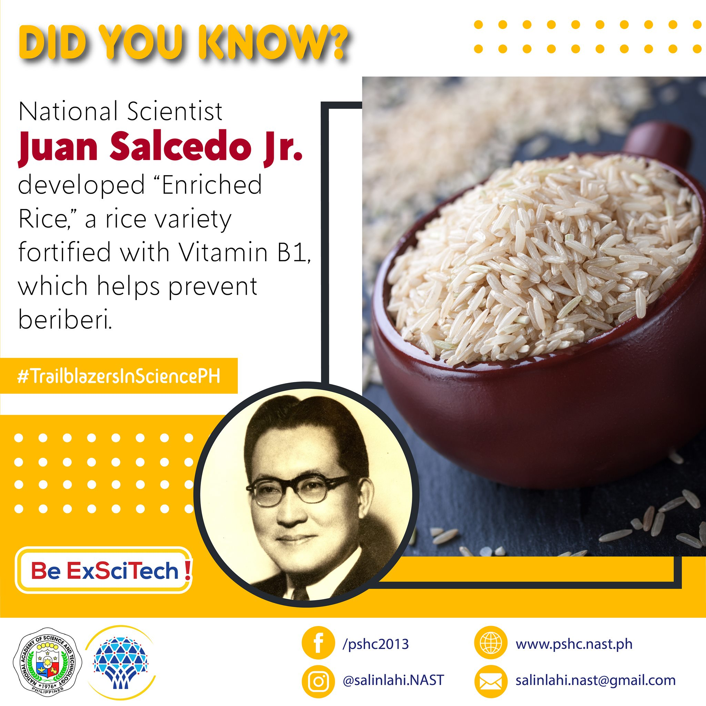

Juan Salcedo Jr.
Year Conferred: 1978
Field of Specialization: Nutrition and Public Health
Status: Deceased
Dr. Salcedo was an instructor in Physiology of the University of the Philippines from 1929-1936. After which he became a Captain in the Medical Corps of the Philippine Army until 1939. He was a professor of Biochemistry at UP and was doing a fellowship study in Nutrition and Biochemistry in the US when World War II broke out. After the war, he became a researcher in health and social welfare, Health and Welfare Officer and then director of Public Welfare before he joined the US public Health Service as Consultant in Nutrition and Director of field Operations in 1947. He was director of the Institute of Nutrition since 1948 before he was appointed Secretary of Health with his appointment, the Institute of Nutrition was transferred to the DOH and a major rice enrichment program was initiated. BCG vaccine production was increased to meet local demands for mass BCG campaign. BCG was also exported to neighboring countries. During his term the Philippine-American Public Health Project was submitted which resulted in the construction of 81 demonstration Rural Health Units in 1953. There were also various WHO-assisted disease control projects and UNICEF-assisted MCH projects and fellowships during his term. In May 1952, he became the first Filipino elected as President of the WHO World Health Assembly (5th (WHA).
Educational Background:
- Salcedo earned his degrees from the University of the Philippines in 1929 and Columbia University in 1943
Dr. Juan Salcedo developed “Enriched Rice,” a rice variety fortified with vitamin B1, which helps prevent beriberi. His discovery helped reduce the cases of beriberi in the Philippines and in other countries.
Contributions
As a scientist, Dr. Salcedo contributed immensely to the areas of biochemistry, nutrition, physiology. As science administrator to science policy development, science promotion and scientific manpower development, he has published 265 works and researches in Philippine and foreign science journals.
Enriched Rice by Dr. Salcedo
Dr. Juan Salcedo developed “Enriched Rice,” a rice variety fortified with vitamin B1, which helps prevent beriberi. His discovery helped reduce the cases of beriberi in the Philippines and in other countries.